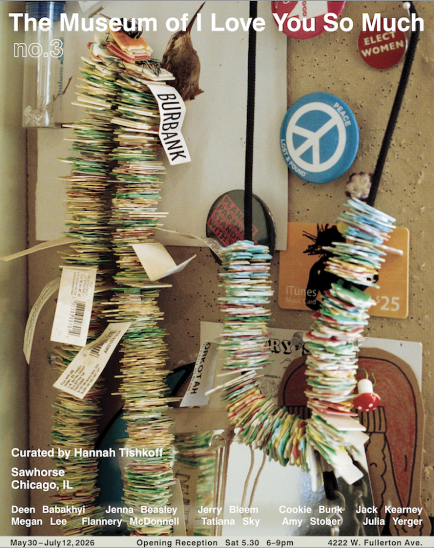

Museum of I Love You So Much #3
Sawhorse is thrilled to present the third iteration of The Museum of I Love You So Much, a curatorial project organized by Los Angeles-based artist and writer Hannah Tishkoff.
Please join us for an opening reception on Saturday, May 30, 6-9pm
Exhibiting artists include Deen Babakhyi, Megan Lee, Jenna Beasley, Flannery McDonnell, Jerry Bleem, Tatiana Sky, Cookie Bunk, Amy Stober, Julia Yerger, and Jack Kearney
If you are only working to be loved, you are in trouble. Still, art is also for making friends. Nobody longs for a professional lover. We want an art that feels like love. Why doesn’t it? Something is in the way. Perhaps it is a table. In The Human Condition, Hannah Arendt describes the world of things placed between us, something like a table, which both relates and separates. When that table disappears, we are no longer joined by anything tangible. This project attempts to visualize that table, however temporarily: a place where objects, gestures, and fragments are set beside one another until, for reasons not always reducible to quality or intention, they begin to matter. Perhaps, this is love.
The “museum,” in the traditional sense, has always tried to stabilize such matters, to hold them still, give them a place to go. Yet a finical distance always remains between a thing and where it came from, between the keepsake and the hour it commemorates, between the object and whatever first gave it charge. We persist in these efforts because the alternative is disappearance. What deserves preservation is seldom clear, and may not be the right thing at all. Because nothing is ever fully kept, we fail repeatedly. It is in this total and ordinary failure that hope persists, and with it our incurable optimism.